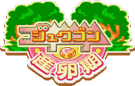
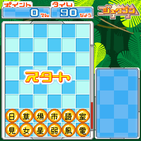
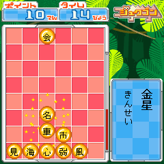
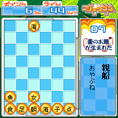

|

|
||
|
■
産卵期を迎えた新しいジュクゴン！ ■
話題のジュクゴンの新しい生態が判明。 卵を生ませてお題モードをどんどん増やしちゃおう |
||
|

| 対応機種 90X・70Xシリーズ |
| ■ あそびかた |
|
 |
上から落ちてくる漢字を動かして、下に積まれた漢字と熟語を作っていきます。できた熟語は画面外に飛んでいって消えます。 左から３列目が一番上まで積み重なってしまうとゲームオーバー！！ 上→下、左→右へと読めるものしか熟語にならないので注意してください！ また、人名や地名などの意味しか持たない固有名詞も熟語にならないので注意！！ ※お題モードは除きます |
| ■ 産卵モード |
|
 |
産卵モードには「９０秒コース」と「とことんコース」があります。 漢字ブロックを熟語にして消すとジュクゴンが熟語を食べます。 ジュクゴンが熟語を食べると産卵ゲージが溜まっていき、ゲージがいっぱいになると・・・卵を産みます！！卵から生まれるものに期待しましょう！！ クリアするとクリア時の残りタイムもボーナスとしてポイントに加算されます。 |
| ■ お題モード |
|
 |
産卵モードで卵からお題が生まれたらデータをダウンロードすることによって特別なジュクゴンが遊べます。 １つだけすぐに遊べるお題が入っているからさっそくプレイしてみよう！ ※お題モードにて正解とされる漢字の組み合わせは２００６年７月１３日に発売されたＰＳＰ版「ジュクゴン」に準じております。 |
| ■ そのほかのモード |
 |
【ランキング】 左ソフトキー「登録」から成績をサーバにアップロードすることができます。全国上位をめざせ！ 【あそびかた】 ジュクゴン産卵期のあそびかたの説明です。 |
<<戻る>>
© SEGA・テレビマンユニオン・テレビ東京